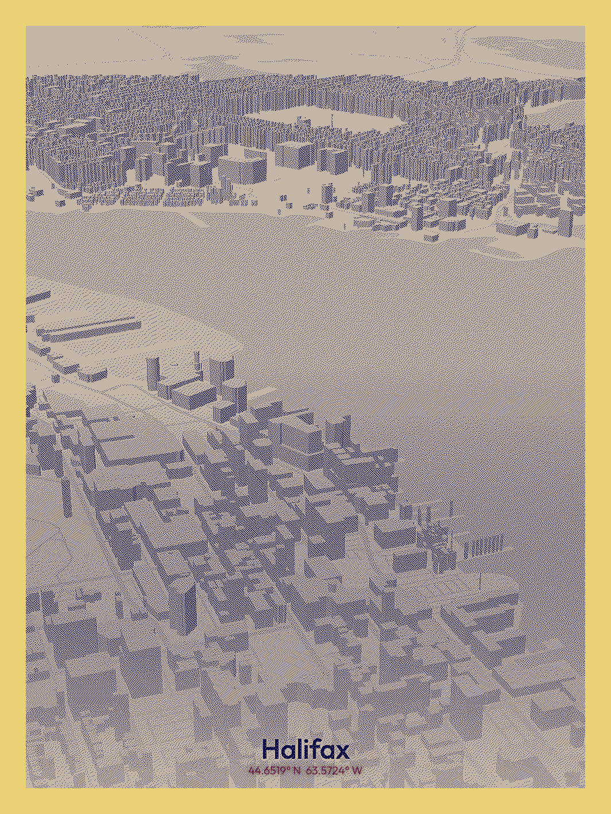

A GIS-based multi-criteria analysis identifying an optimal Light Rail Transit corridor connecting suburban Halifax to the downtown train station. Using ArcGIS Pro, an impedance surface was constructed from terrain, hydrology, wetland sensitivity, commuter density, and existing bus network proximity across the Halifax Regional Municipality.
Research confirms that daily commute time is negatively correlated with wellbeing — private car commuters report the highest stress levels — making predictable, rapid transit a meaningful quality-of-life intervention. — Chatterjee et al., 2020
Impedance Criteria
Each analysis stage transformed source datasets into a unified impedance surface, from which the least cost path algorithm identified the corridor of minimum resistance between origin and destination.
Data Collection
LiDAR DEM, Census DA commuter data, HRM hydrology & wetland polygons, Halifax Transit GTFS routes
Criteria Raster
Each factor converted to 10 m resolution raster via Feature to Raster or Euclidean Distance tools
Reclassification
Reclassify tool applied to each raster; high-risk cells (steep slopes, open water) assigned maximum impedance
Impedance Surface
Rasters summed into Raster_TOTAL (value range 125–17,025); low values = favourable corridor
Cost Distance
Cost Distance tool generates accumulated cost surface from origin point across the impedance raster
LCP Output
Cost Path → Raster to Polyline extracts the least cost path as a mappable vector corridor
The initial least cost path was derived from a composite raster integrating four environmental and demographic factors, with impedance values ranging from 125 to 17,025.
Methodology DetailData source: Halifax Regional Municipality Open Data Portal. Raster resolution: 10 m.
A fifth criterion — proximity to existing Halifax Transit bus routes — was introduced as a multimodal connectivity layer. Bus stop proximity was reclassified into four impedance bands to reward alignment with established transit corridors.
Bus Stop Proximity Classification| Distance to Stop | Impedance Value | Rating |
|---|---|---|
| 0 – 200 m | 25 | Desirable |
| 200 – 500 m | 100 | Good |
| 500 – 1,000 m | 500 | Undesirable |
| > 1,000 m | 2,000 | Highly Undesirable |
Data source: Halifax Regional Municipality Open Data Portal. Raster resolution: 10 m.

"Multimodal integration is not an addendum to transit planning — it is the condition upon which a route earns its right of way."
— Halifax Rapid Transit Strategy, 2020
A fifth criterion — proximity to existing Halifax Transit bus routes — was introduced as a multimodal connectivity layer. Aligning the LRT corridor with established bus networks reduces transfer distances and supports car-independent urban mobility as outlined in Halifax's Rapid Transit Strategy.
The proposed route avoids steep terrain and hydrologically sensitive areas while prioritising high-commuter-density corridors. Both Part 1 and Part 2 alignments demonstrate strong spatial logic relative to the study area's geography.
Equal weighting across criteria may not reflect real planning priorities. Land use, property acquisition costs, and underground infrastructure were not incorporated. The model treats all study-area cells as buildable, which overstates routing flexibility.
Part 2 and Part 1 routes are nearly identical — confirming that the original model had already captured the dominant low-impedance corridor. Part 2 is recommended, as its explicit integration of bus network proximity aligns more directly with Halifax's Rapid Transit Strategy goal of multimodal, car-independent urban mobility.